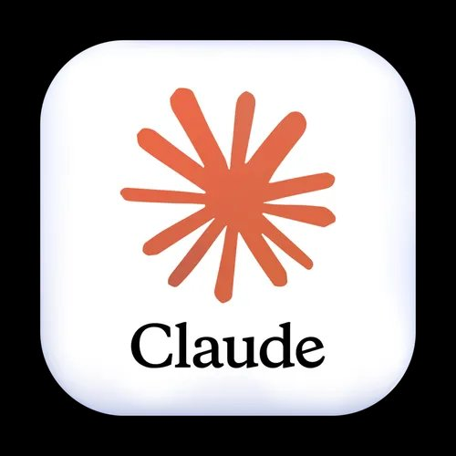

Création d'un Portfolio
Mission 6 — 1ère Année BTS SIO - Semestre 2
Toutes les missions
Création d'un Portfolio
La mise en avant de soi et de ses compétences est fondamentale pour la recherche d'emploi ou dans une entreprise. Cette mission, qui se qualifie plus comme une tâche à ajuster constamment, porte sur toute la formation BTS SIO et même au-delà. La création de ce portfolio est celle-là même qui porte sur ce site web.
📋 Cahier des charges
- Créer un site web type "portfolio"
- Recenser toutes les missions effectuées au cours des deux ans
- Présenter la formation et l'établissement
- Se mettre en avant et présenter son cursus
- User de langages de programmation / CMS

🛠️ Tâches effectuées
- Site web fonctionnel
- Apparition de toutes les missions de première année
- Présentation de la formation et de l'établissement
- Mise en avant de sa personne et de son cursus scolaire/professionnel

Points Forts
- ✅ Aide via l'IA Claude
- ✅ Meilleure compréhension des langages utilisés
- ✅ Bon support professionnel pour plus tard
Points Faibles
- ⚠️ Adapter la forme du portfolio aux exigences
- ⚠️ Manier les langages pour structurer
Avis Personnel
Pour plus tard et même dans la formation actuelle, l'apport du portfolio me sert car il me montre et me fait comprendre un peu plus sur ma formation. Il sera également un bon support pour plus tard, que ce soit pour l'épreuve de soutenance ou de manière professionnelle.
HTML / CSS / JS
GitHub
Claude AI